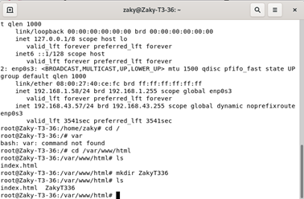
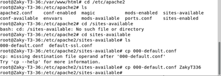
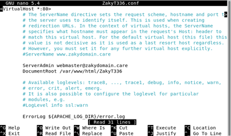
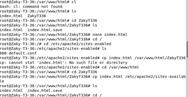
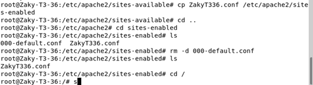

Setting Apache2
1. Pertama pergi ke /var/www/html dengan command cd /var/www/html/ . Lalu buat direktori bernama ZakyT336 dengan command mkdir ZakyT336

2. Berikutnya, pergi ke /etc/apache2/sites-available dengan command cd /etc/apache2/sites-available lalu duplikat 000-default.conf ke nama ZakyT336.conf dengan command cp 000-default.conf ZakyT336.conf

3. Lalu buka dengan command nano ZakyT336.conf lalu ubah webmaster@localhost dengan webmaster@zakydomain.care dan tambah ZakyT336 di belakang /var/www/html Lalu Simpan

4. Selanjutnya, pindah ke /var/www/html dengan command cd /var/www/html/ZakyT336 . Kemudian ubah isi index.html dengan nano index.html . Lalu copy index.html ke /etc/apache2/sites-available dengan cp index.html /etc/apache2/sites-available

5. Berikutnya, pindah ke /etc/apache2/sites-available dengan command cd /etc/apache2/sites-available . Kemudian copy ZakyT336.conf ke /etc/apache2/sites-enabled dengan command cp ZakyT336.conf /etc/apache2/sites-enabled . Lalu gunakan command cd /etc/apache2/sites-enabled lalu hapus 000-default.conf dengan command rm -d 000-default.conf
